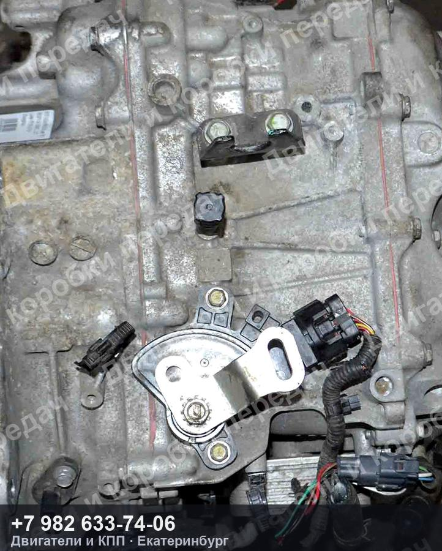
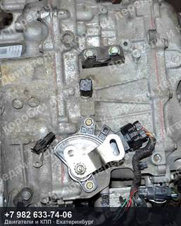
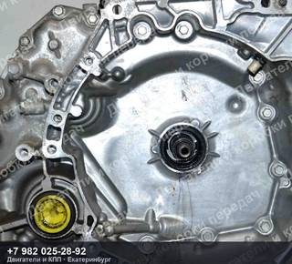
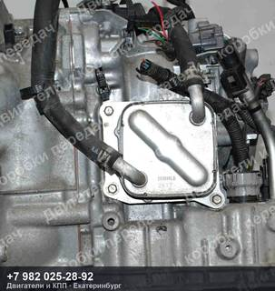
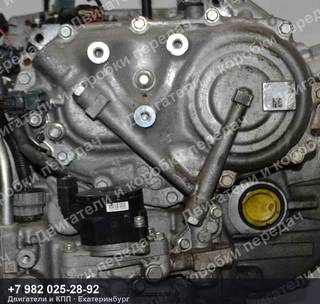
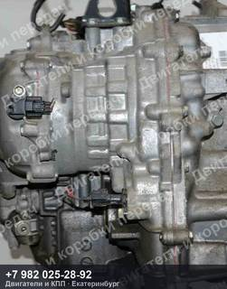

Контрактный вариатор Nissan JUKE YF15
93 500 ₽
Контрактный вариатор Nissan JUKE YF15 — двигатель HR15-DE, код RE0F11А.
Комплектация: без муфты
| Марка | NISSAN |
| Модель | JUKE |
| Кузов | YF15 |
| Двигатель | HR15-DE |
| Тип | Вариатор |
| Номер детали | RE0F11А |
| OEM-номера | 31020-3XX8C |
| Состояние | Б/у |
| Артикул | ДК-557199 |
Гарантия на проверку и установку · бесплатная доставка до транспортной компании ·
отправим фото и видео агрегата до оплаты
Контрактный вариатор Nissan JUKE YF15 — что важно знать
Агрегат снят с автомобиля NISSAN JUKE YF15. Двигатель HR15-DE. Номер детали RE0F11А. Подходящие OEM-номера: 31020-3XX8C.
Перед отправкой агрегат проверяем и фотографируем. Пришлём фотографии и видео работы именно этого экземпляра, поможем проверить совместимость по VIN вашего автомобиля. Отправка из Екатеринбурге до транспортной компании — бесплатно, дальше — любой ТК до вашего города.
Похожие агрегаты Nissan

Контрактная АКПП Nissan AD/SUNNY/WINGROAD FB15/WFY11/VFY11
двигатель QG15-DE, код RE4F03B
73 500 ₽

Контрактная АКПП Nissan AD/SUNNY/WINGROAD FB15/WFY11/VFY11
двигатель QG15-DE, пробег 12 000 км
86 500 ₽

Контрактная АКПП Nissan AVENIR/BLUEBIRD/EXPERT/PRIMERA/TINO/WINGROAD W11/QU14/QG10/VW11/QP11/V10/WFY11
двигатель QG18-DE, пробег 110 000 км, код RE4F03B
66 500 ₽

Контрактная АКПП Nissan AVENIR/BLUEBIRD/PRIMERA P11/WP11/W10/EU14/HU14/PR11
двигатель SR18/SR20, код RL4F03A-FL38
73 500 ₽